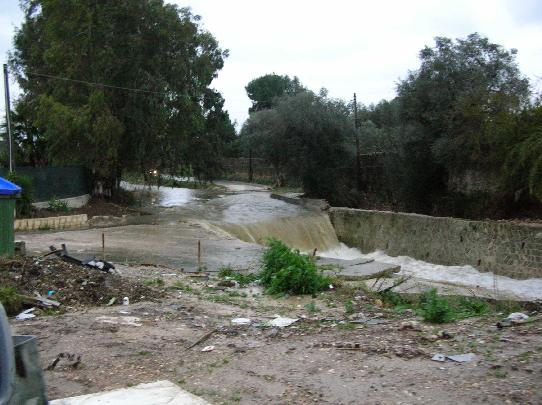
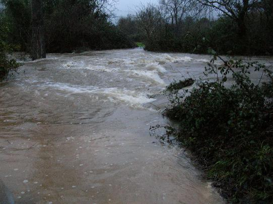
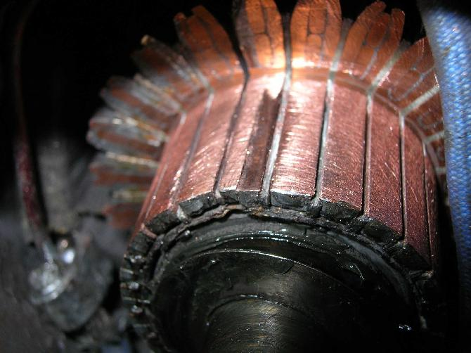

Jan 31 2006

PIOVE, e TUTTO VA STORTO PER SEMPRE
A me piace la pioggia. mi piace quando piove.
Di solito, non uso ombrelli, tanto uno con l’ombrello si bagna lo stesso, e, diciamocelo, un po’ d’acqua non fa male a nessuno.
pero’ oggi, che e’ il giorno in cui DEVO RIPARARE IL MOTORINO D’AVVIAMENTO, e CERCO I RICAMBI, dovevo passare da questa STRADA:

e gia’ la pioggia mi piace UN PO’ MENO.
OK, allora cambiamo strada, passeremo da qui:

ecco. adesso la pioggia MI STA UN PO’ SUL CAZZO, SAPETE
piove da PIU’ DI 48 ORE ININTERROTTAMENTE.
MI SONO ROTTO IL CAZZO.
arriviamo a SIRASUCA, CITTA’ DEI MERDEI, andiamo da BOTTARO, che VENDE RICAMBI ELETTRAUTO, compriamo un PIGNONE e le SPAZZOLE del PORCO JAVE’ del MOTORINO DI AVVIAMENTO, totale 75 EURO
PAGHIAMO, TORNIAMO NEL DRAMMA DEL DILUVIO UNIVERSANALE
TRE ORE per “scendere” il motorino d’avviamento dalla POSIZIONE MALATA dove gli INGEGNERI CITROEN DI MERDA LO HANNO POSIZIONATO, incastrato TRA IL COLLETTORE DEI GAS DI SCARICO, il BRACCETTO DELLO STERZO, LA BARRA DEL TELAIO E il PORCO DIO IMMEDIATISTA
smontiamo il tutto, revisioniamo, rimontiamo il tutto, notiamo una piccola tacca su uno dei contatti dell’indotto, so che NON CAPITE MA NON MI INTERESSA:

MAH. ci guardiamo in faccia, “NON SARA’ GRAVE, CIO’ PORTERA’ AD UN MAGGIOR CONSUMO DELLE SPAZZOLE, MA TANT’E'”
vabe’, rimontiamo il NUOVO PIGNONE, ci facciamo UN CULO DELLA MADONNA LURIDANA a dissaldare i contatti delle SPAZZOLE STRISCIANTI e a risaldare le nuove spazzole, poi CRISTOFECHIAMO IL GESU’ SPANDILETAME per rimontare tutto con le spazzole nuove, ingrassando tutto per bene
poi proviamo il motorino d’avviamento con una batteria per auto.
KRA-KRAAANG-FAALLAANG-
SGRANGAAAANG-AMPALLAANG-
SOFONASBAAANG-
PORCAMADONNAAARGHAAANG-
STRAKRAKG-KRAAAANG-
AMPAALLAAANG-FALUNGOOONG-
SPATAPA-KRA!!!!
*silenzio di TOMBA*
…
75 euro GETTATI NEL CESSO DI DIO, TIRATO LO SCIACQUONE E GETTATI SOPRA I TAMPAX DELLA MADONNA DIGA DI PISCIO
le spazzole nuove, a causa della maggior pressione delle molle, si sono INCASTRATE nella fessura del contatto di cui sopra, agganciandosi nei contatti dell’indotto, DEFORMANDO, SPACCANDO E DEVASTANDO il QUORHE dell’INDOTTO STESSO, MASSACRANDO I RESTANTI CONTATTI DEL PORCO INDIOTTO, che ora va SOSTITITO, PER TUTTA LA VITA, FOREVER, PER SEMPRE, MAI PIU’, PORCO GESU’, CRISTO GRISU’, JAVE’ BANTU’, VAFFAN CU’
ci vogliono 200 EURO,
DUECENTO PORCI DII DI EURO MERDA DI PRODI MERDA E EUROPA DI MERDA
e DIO E’ PORCO, E IL FURGONE E’ PARTITO A SPINTA sotto un DILUVIO DEL CRISTO MAIALE e domani lo avviero’ in discesa
si, vado in giro senza motorino d’avviamento, mi sento STRONZO DENTRO, portero’ con me un’ASCIA domattina, e spero che NESSUNO MI RIVOLGA LA PAROLA PRIMA DI COLAZIONE, altrimenti DOVRO’ SPORCARE L’ASCIA
200 euro, CRISTO MALEDETTO
che sia DUCECENTO SETTANTA CINQUE VOLTE PORCO DIO, MALEDETTO